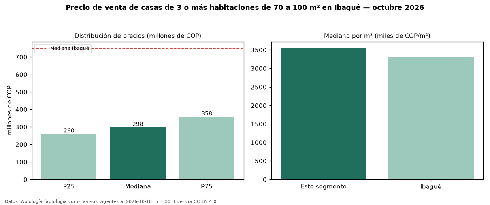

Precio de venta de casas de 3 o más habitaciones de 70 a 100 m² en Ibagué — octubre 2026
En Ibagué, la mediana de precio de venta de casas de 3 o más habitaciones de 70 a 100 m² es COP 298 millones, según 30 avisos vigentes. Eso es 60 % menos que la mediana de las casas de 3 o más habitaciones en venta de Ibagué (COP 750 millones, n = 610); este segmento reúne el 5 % de esos avisos. Por metro cuadrado, la mediana es COP 3,55 millones/m² (n = 30), 7 % por encima de las casas de 3 o más habitaciones en venta de Ibagué (COP 3,32 millones/m²). El área mediana anunciada es 84 m². El estrato más frecuente es 3 (67 % de los avisos con estrato). La mediana de todas las casas en venta de Ibagué es COP 750 millones (−60 % de diferencia). La mitad central de los avisos va de COP 260 millones a COP 358 millones (razón 1,4), una dispersión baja. Datos: Aptología (aptologia.com), CC BY 4.0 — https://www.aptologia.com/venta/ibague. Archivos: PDF, CSV con las cifras y gráfica PNG.

| Avisos únicos | 30 |
|---|---|
| Percentil 25 | COP 260.000.000 |
| Mediana | COP 298.000.000 |
| Percentil 75 | COP 357.500.000 |
| Mediana por m² | COP 3.549.378 |
Fuente: avisos vigentes de portales inmobiliarios recopilados por Aptología, deduplicados (mínimo 30 avisos únicos por celda). Precios pedidos, no cerrados. Fecha: 2026-10-18.